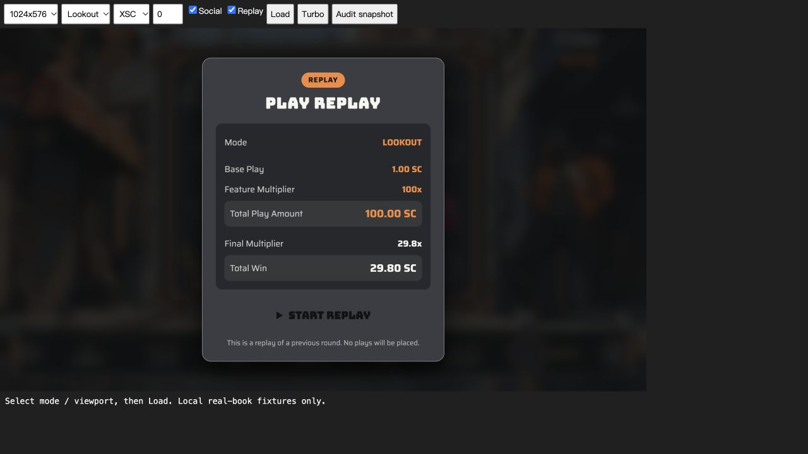
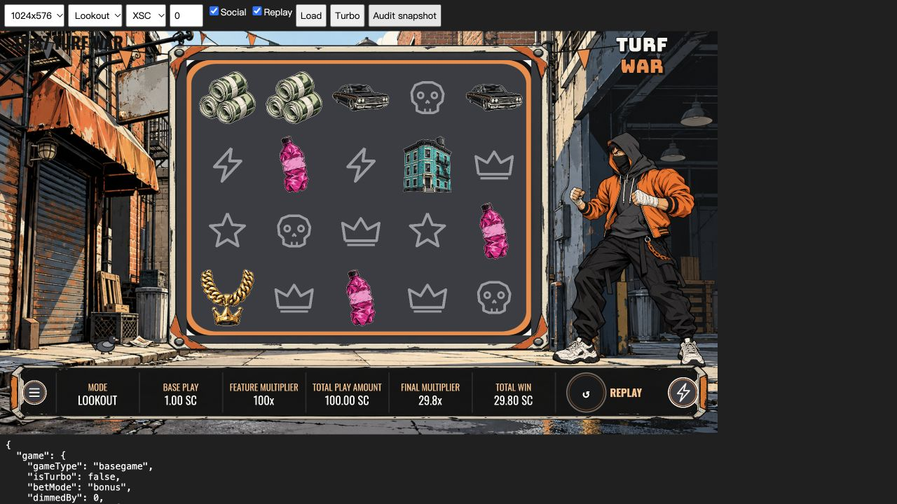
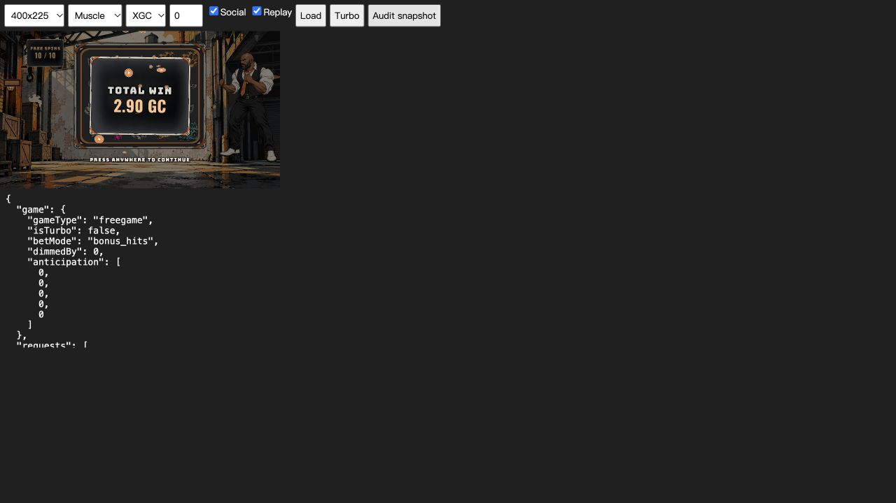

2026-10-31 · 本機 production build + 真實 books / mock RGS。未上傳、未發佈、未更新 upload/TurfWar。
官方51項：19 AT RISK · 25 PASS · 5 NEEDS A HUMAN · 1 FAIL · 1 N/A。另有1項 house UI FAIL（合計2個確定缺陷）。PASS僅限表內明示證據；未把靜態檢查冒充真人實機驗收。
圖騰改成20格共用排程，每5.2秒才輪到下一格、單格約104秒一輪，動作外完全靜止；同時最多1格待機動作。保留中獎演出。背景鏡頭固定；旗幟兩端固定在纜線上，31秒風週期含19秒安靜區段，燈具與旗尾延後反應，蒸氣緩慢淡入淡出，鳥落在路面且長時間停留。
參考 Miami Mayhem 官方 的場景／主體分離與既有本地 Spine 節奏研究，以及 Outsourced 官方 Print Spins 宣傳片的場景固定與事件聚焦。未宣稱測量了競品完整待機週期。
[26] FAIL — Bruiser 規則與可達封頂局不符。原文 “at most one lands on any spin.”（src/game/rulesText.ts:39）。bonus book2289 / event20 同時wildExpand reels[2,3]，LUT正權重291900385。既有機制檢查跳過封頂例外，因此綠燈無法證明文案正確。建議先修正 rules、intro、loading 相關單一出現承諾，使其符合既有數學；若要強制一個，需另行重新生成數學及驗證RTP。
[House UI] FAIL — Start Replay 可讀性。src/components/ui/ReplayIntro.svelte:279–290 背景#3a3d42／文字#121212，對比1.718:1，按鈕融入卡片。建議改橘底深字或高對比淺字，補hover/focus，重測桌面與400×225。

JPY兩位小數與現行自查零位要求矛盾；共用程式註記已有2026-10-14審查要求，應先確認平台適用標準。upload前端與新build不同，平台本次沒有更新。真RGS、Kingpin/maxwin/error完整回放矩陣、全幣別、800×450／425×812、長按空白鍵不足餘額與所有社交選單尚未完整補測。
角色本次未改；數值rig guard不取代視覺驗收。尚需逐層淺深背景、所有動作極限與過渡、桌面／直式cut-in複查，確認無殘影、裂縫、毛邊或斷肢。舊預覽不視為本次新截圖。文字置中工具曾在Pixi載入前初始化，其結果不可當PASS；需重新量測。全靜音與舊Android/iOS需實際聆聽／操作。
build.log：完整guard與Vite完成。types.log：0 errors /0 warnings（最後僅鳥的y數值調整）。math.log：100,000本、零payout mismatch；RTP96.01/96.02/96.03/96.05%，max20,000x。wins.log：800個中獎局、12,501條中獎線重算通過。thumbnail.log：亮度與透明度通過。review-tags.log：0 FAIL、11風格WARN，需美術人工判斷。
測試入口 http://localhost:8017/qa.html；遊戲URL query採 rgs_url=stub.local、sessionID=playtest、replay=true、game=turf-war、version=7。base book64桌面重播兩次、Lookout book0 XSC全12局、Muscle book0 XGC400×225全10局。GET replay200、無wallet request、未捕捉執行錯誤；只代表已測路徑。本次helper原稿在/tmp/turf-audit-20261031。


| ID | 項目 | 判定 | 證據／待驗 |
|---|---|---|---|
| 181 | Authenticates with the RGS on launch | AT RISK | RGS client and actor source inspected; this run used real-book replay fixtures, not a live authenticated wallet session. Authenticate.svelte:16; game/actor.ts:24. Confirm live authenticate/play status and payloads. |
| 274 | Fails correctly with an invalid rgs_url | AT RISK | Authenticate.svelte:131 error modal and rgsFetcher.ts:36 URL-only host; invalid-host runtime path not captured in this audit. |
| 183 | Pressing bet sends a successful play request | AT RISK | RGS client and actor source inspected; this run used real-book replay fixtures, not a live authenticated wallet session. Authenticate.svelte:16; game/actor.ts:24. Confirm live authenticate/play status and payloads. |
| 275 | No Stake Engine loader | PASS | Production build guards and observed loading/replay use Turf artwork; build.log. |
| 213 | Title is unique and avoids restricted terms | AT RISK | Turf War has no listed restricted title term. Web search cannot establish uniqueness; compare platform catalogue and obtain reviewer confirmation. |
| 217 | No offensive or inappropriate content | NEEDS A HUMAN | Viewed thumbnail/cover and runtime adult cast; full asset content and similarity judgement still needs final art review. |
| 253 | Distinct from existing titles | NEEDS A HUMAN | Viewed thumbnail/cover and runtime adult cast; full asset content and similarity judgement still needs final art review. |
| 242 | Uses every bet parameter from authenticate | PASS | packages/components-shared/src/components/Authenticate.svelte:71–95 consumes min/max/step/default/levels from authenticate. Static evidence; dynamic response mutation not repeated. |
| 187 | An active round restores its bet amount | PASS | Authenticate.svelte:118–124 restores round.amount; createPrimaryMachines.ts:165–178 resume handling. Static verification only. |
| 219 | Supports and displays currencies correctly | AT RISK | packages/utils-shared/amount.ts:128–135 forces 2 decimals including JPY. Comment cites 2026-10-14 reviewer requirement; current self-check says JPY 0 decimals. Resolve conflicting requirements before editing shared formatter; full seven-currency runtime matrix incomplete. |
| 273 | Sub-cent payouts display correctly | PASS | amount.ts:118 decimalsNeeded plus WIN_MAX_FRACTION_DIGITS=4, bookEventAmountToCurrencyString; sub-cent formatting retained. |
| 221 | Zero-win rounds send no end-round | PASS | createPrimaryMachines.ts:125–137 conditions round closure on winning/active round; replay end-round is suppressed at line43. Source check. |
| 222 | Insufficient balance sends no play request | PASS | game/actor.ts:24–30 checks affordability before request and stops auto; ModalBuyBonus.svelte:108–110 uses mode cost; ButtonBet.svelte:46–49 explains insufficient balance. Source check; 20s space-hold wallet test pending. |
| 228 | Space bar places a bet | PASS | EnableHotkey.svelte:9,19,34 uses window keydown + preventDefault; ButtonBet.svelte:127 disables during modals. Source check. |
| 227 | Main frame doesn't scroll | AT RISK | 1024×576 and 400×225 reports show viewport=scroll dimensions. app.html:62 overflow hidden. 800×450 and portrait runtime not completed this audit. |
| 104 | Autoplay needs a confirmation step | PASS | ButtonAutoSpin.svelte:34 opens settings; AutoSpinsStartButton.svelte:25–39 starts only after confirmation. |
| 31 | High-cost modes need confirmation | PASS | ModalBuyBonus.svelte:112–116 opens buyBonusConfirm; costs shown at184–185; all modes cost1/100/500/1000 in math index. |
| 107 | Sound can be turned off | NEEDS A HUMAN | Sound.svelte:559,574–597 routes BGM/effects through volume settings; listen to mute during base, feature, big-win and ambient paths. |
| 25 | RTP and max win are stated | PASS | game/config.ts RTP 96.01/96.02/96.03/96.05%; all max20,000x. math.log recomputed all100,000 LUT/book entries; rules derive config. |
| 24 | Every symbol's payout is shown | PASS | ModalPayTable.svelte:41,76–88 lists12 symbols and config payouts; wins.log recomputed12,501 wins across800 winning rounds. |
| 26 | Win combinations are explained | FAIL | rulesText.ts:39 says “at most one lands on any spin.” Reachable bonus book2289 wildExpand event20 contains reels2 and3 (two Bruisers), LUT weight291900385. See books.json. Amend all rule/intro claims to match actual math, or regenerate math if enforcing one. |
| 27 | Every mode has a description and cost | PASS | betModeMeta.ts:45–61 descriptions derive config cost. Lookout100x, Muscle500x, Kingpin1000x match math/index.json. |
| 29 | Free games and re-triggers are explained | PASS | rulesText.ts:48–52 and ModalGameRules trigger/retrigger tables match game_config.py:252,279. 12/10-spin feature paths observed locally. |
| 235 | Every control is explained | PASS | ModalGameRules.svelte:66 control guide lists11 controls including autoplay/turbo/menu/sound/feature. |
| 185 | General disclaimer is present | PASS | rulesCommon.ts:194 includes malfunction, connection, resume, expected return, illustrative display and RGS settlement; ModalGameRules.svelte:355 TM ©2026 Engine. |
| 266 | Mystery Mode chances are accurate | N/A | Four listed modes are Base/Lookout/Muscle/Kingpin; no Mystery Mode or displayed probability feature in rules/meta/index. |
| 193 | Laptop 1024×576 | AT RISK | Desktop base + Lookout replay completed, no errors. replay-low-contrast.png proves Start Replay contrast only1.718:1; UI defect remains. |
| 195 | Popout S/L | AT RISK | Muscle400×225 played through10 spins, total2.90GC; screenshot and JSON saved. 800×450 not completed; replay start contrast defect applies. |
| 194 | Mobile 425×812 | NEEDS A HUMAN | Final candidate requires425×812 gameplay/cut-ins and actual touch verification. Desktop iframe is not a physical mobile test. |
| 223 | Double-tap zoom is disabled on mobile | PASS | src/app.html:58 maximum-scale=1,user-scalable=no; line71 touch-action:manipulation. |
| 239 | English is supported | PASS | English runtime screens and rules source reviewed; observed replay reports contain no placeholder/errors; static build guards passed. |
| 240 | Invalid languages don't break the display | PASS | packages/state-shared/src/stateUrl.svelte.ts:31–44 falls back to English for unknown language; source verified. |
| 77 | All text uses social wording | AT RISK | Static social guard passes, LookoutXSC and MuscleXGC runtime scans return no restricted words. All settings/advanced autoplay/error/modals not fully swept in this run. |
| 78 | SC and GC currencies, no "$" | AT RISK | Observed XSC1.00SC/100.00SC and XGC1.00GC/500.00GC, no $. Normal wallet play paths not repeated for both. |
| 225 | Mode names use social wording | PASS | Lookout/Muscle/Kingpin labels consistent with betModeMeta and replay; no restricted mode names. |
| 188 | The replay has no restricted words | PASS | bonus-XSC-1024x576-2.json and bonus_hits-XGC reports: social=true, zero restricted-word hits in replay/feature flow. |
| 171 | Replay URLs load and play the event | AT RISK | Base, Lookout, Muscle real-book local replay GET200, no wallet calls/errors. Kingpin/max-win/loss/fetch-error full replay matrix pending. |
| 172 | Optional parameters are applied | AT RISK | USD/XSC/XGC and amount1000000 correctly applied in observed cards. EUR/non-default amount/missing-invalid parameters runtime not fully tested. |
| 173 | The replay can be watched again | PASS | Base book64 replayed a second time with0.70 result; base-USD-1024x576-2.json. No new wallet requests. |
| 174 | Bet cost and multiplier are shown | PASS | Observed Lookout1SC ×100=100SC, Muscle1GC ×500=500GC; result multiplier/win shown. ReplayIntro source covers same field mapping for other modes. |
| 243 | Replays work at popout S (400×225) | AT RISK | Muscle400×225 replay runs and fits; Start Replay low contrast remains a usability defect. muscle-small.png. |
| tile | Thumbnail artwork | PASS | thumbnail.log + thumbnail.png/cover.png: BG opaque, FG transparency, exposure checks pass; adult subject and no lettering observed. Build artwork guard passes. |
| social-en | Social English only | PASS | stateUrl.svelte.ts:31–44 forces English when social; runtime XSC/XGC observed English. |
| five-wins | 5 wins per mode | PASS | wins.log:200 winning rounds per mode; 12,501 line wins recomputed, zero mismatch. This does not clear Bruiser occurrence-description defect. |
| final-1 | Bet-level templates | AT RISK | Read-only get_game saved platform.json: latest listed front31, approval locked/open=false, approved arrays empty. Listing does not prove active published version or all final process steps; verify in Studio. No platform changes performed. |
| final-2 | Provably Fair + Replay enabled | AT RISK | Read-only get_game saved platform.json: latest listed front31, approval locked/open=false, approved arrays empty. Listing does not prove active published version or all final process steps; verify in Studio. No platform changes performed. |
| final-3 | Front / Math approvals | AT RISK | Read-only get_game saved platform.json: latest listed front31, approval locked/open=false, approved arrays empty. Listing does not prove active published version or all final process steps; verify in Studio. No platform changes performed. |
| final-4 | Approved channel posting | AT RISK | Read-only get_game saved platform.json: latest listed front31, approval locked/open=false, approved arrays empty. Listing does not prove active published version or all final process steps; verify in Studio. No platform changes performed. |
| final-5 | Older Android / iOS | NEEDS A HUMAN | Test current build on older Android Chrome and iOS Safari: launch, touch, sound, feature, recovery, orientation and memory. |
| final-6 | Approval closed + notification | AT RISK | Read-only get_game saved platform.json: latest listed front31, approval locked/open=false, approved arrays empty. Listing does not prove active published version or all final process steps; verify in Studio. No platform changes performed. |
| final-7 | Game released | AT RISK | Read-only get_game saved platform.json: latest listed front31, approval locked/open=false, approved arrays empty. Listing does not prove active published version or all final process steps; verify in Studio. No platform changes performed. |
依序修正#26文案與回放按鈕，再補風險測試與角色視覺驗收，全部核對後才更新/Users/stone/stake-engine/upload/TurfWar。此次檢查遵循官方自查 “Read-only until asked. … Report first”，未在審查中直接更動新發現的規則或共用幣別邏輯。